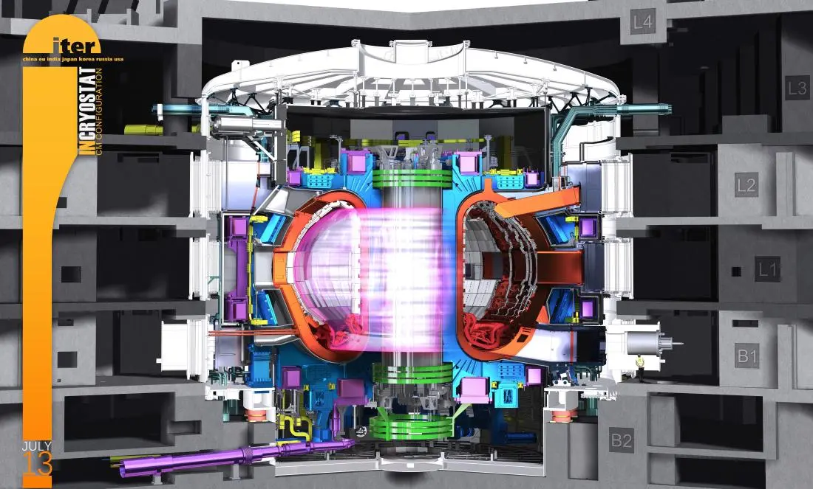

En el sud de França, 35 nacions estan colaborant per construir el tokamak més gran del món, que és reactor de fusió a gran escala i que és una font d'energia que no emet gens de diòxid de carboni. El principal objectiu d'ITER és la investigació i demostració de mantenir el plasma calent o sigui que l'energia produïda per la reacció de fusió de l'heli, sigui capaç de mantenir la temperatura del plasma i així poder reduir o eliminar la necessitat d'un escalfament extern. ITER també provarà l'integració de tecnologies essencials per a un reactor de fusió (com ara imants superconductor, manteniment remot...) Des de l'any 1985, milers d'enginyers i científic han contribuït en el disseny d'ITER i actualment, els membres d'ITER (Xina, Unió Europea, Índia, Japó, Corea, Rússia i Estats Units) estan compromesos a col·laborar en la construcció i operació del dispositiu experimental ITER. |
 | |
|---|---|---|